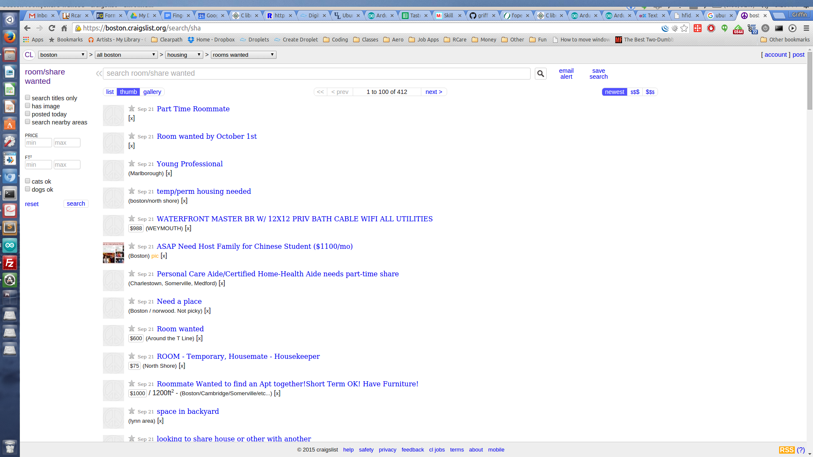
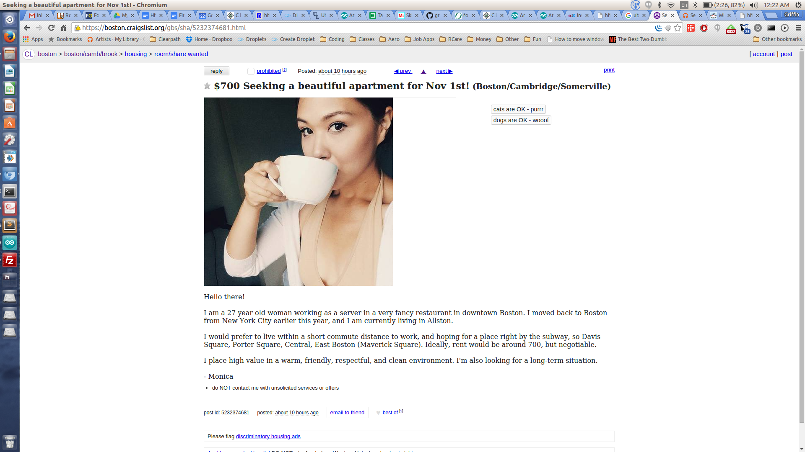

Los Ninos Team - Redesigning the roommate finding experience
List of Inspiration ideas
- Craigslist - We are inspired its interface for finding rooms.
- Airbnb - We like its verification and reputation for security as well as its other features.
- Newegg Search - We are inspired by the use of filters and other narrowing features.
- Alumni Mailing List - We like the sense of trustworthiness people have with alumni.
- Tinder - We like the ease of using its matching interface.
- Facebook Groups - We like being able to view mutual friends.
- Zillow - We are inspired by viewing and investigating properties in a particular area.
- Padmapper - We like the usability for finding sublets.
- Coffee meets bagel - We like the idea of only one match a day and think it could apply to finding roommates.
- Your Home Suite - We like the emphasis on images and its purpose in finding rental homes.
- Eharmony - We like their user verification.
- OkCupid - We like their matching algorithm and its metric for how compatible two users are.
- LinkedIn - We like the Mutual Connections feature, which can be applicable to finding similar people.
- Padmapper - We would like to grab postings from other sites similar to this service.
- Yoroomies app - A similar roommate finding app.
- Physical Bulletin board of postings - A simple, easy interface for finding things all at once.
- Binder Full of Postings - We are inspired by viewing things one-by-one like flipping through a binder.
Detailed Inspiration Ideas
Airbnb Safety & Security- Jasper

AirBnb is a website for people to list, find and rent lodging. While our team’s design emphasizes more on helping people find roommates, we would like to borrow some successful design elements used by AirBnb. We are inspired by AirBnb’s rental listing service because of its popularity and reputation for safety and security. At the bare minimum, we would like our users to feel safe and secure from finding to living with their roommates. To reach this goal, we would like to borrow some safety and security design elements and also omit others that are not as relevant.

Trust is important in dealing with the host and room seekers. At the bottom of each AirBnb listing, a section with Trust badges of the host is displayed at the bottom of each listing. These badges are obtained by meeting criteria, such as hosting several times, receiving reviews and verifying an official ID. We like that these badges function as visual cues about hosts. A reader can skim through a listing and quickly assess information.
We would like to include similar badges for roommate seekers to ensure a sense of security. We think that it is also important for other room seekers to quickly learn about each other, such as whether they are clean or messy, or whether they are an early bird or a night owl. However, we do not want to include too many badges, which may confuse or distract the user.

There is a section that focuses on the host, below the Trust section. A brief biography and picture about the host is included at the bottom of the listing. We like that the biography and image since it enables the user to capture a first impression of the host. We also like the option to contact the host on the same page and an option to view the mutual friends. This provides an extra sense of security because of the ability to connect with the host through a line of communication. However, we think the connections section can be improved because the connections section disappears if the user does not share any mutual friends.
We would like to add the option of adding a brief biography and picture in a roommate seeker’s profile. This allows them to add any additional information about themselves, which can be important for others to learn more about them. We would like to show mutual friends through a similar interface.

When clicking on the full profile, we find a more complete profile of the host. We find more information on their personal background, specifically their contact information, number of friends, number of reviews, education and work. We like that there is a lot of information about the user. It provides a level of personalization to the profile, but we think there may be too much personal information displayed.
We are cautious on requiring more information than is necessary from our users. We are interested in exploring the option to make some fields of information to be mandatory, but the verified ID and About Me section be left optional.
With these features, we can provide a simple interface to help people roommates and feel confident in feeling safe and secure.
Newegg Search Features - Jeff
Newegg Search Narrowing lists all of the features of the device in question and lets the user select criteria ranges for each of these features as filters, allowing users to hone in on product traits that are important to them. These narrowing filters remove products that do not fit the user’s specifications, meaning that the user can focus on deciding between a smaller number of products that match what they want. It is a powerful way to let users quickly sort through massive lists of products. In the example below, we are browsing monitors, and we have selected a price range, response time, and contrast ratio, which are represented both checks on the narrowing filter browser on the left, and as tags at the top of the page.
The best parts about Search Narrowing is that it displays the number of items matching each filter so the user knows which filter criteria are the most common among manufacturers. Newegg refreshes the results every time a filter is added, creating annoying excess load times, but there are other versions of search narrowing that require the user to press submit before it applies the selected filters. Another possible issue with search narrowing is that if the user fills out the filters incorrectly, it could filter out results that may actually apply to them. Newegg’s Search Narrowing also hides filters that no longer apply to the current filtered list of products, so if the user is looking to add filters previously presented, they must go back to the page where all of the options for that filter were not already filtered out. In the example below, we selected a contrast ratio that only the manufacturer acer provides, so it hides the manufacturer filters on the left completely.

Search narrowing is very applicable to roommate searching, as users could filter out people who do not meet their expectations. These expectations would be represented as filters such as noise, messiness, and bed time. The user could select bed time ranges and acceptable types of noise through the filters, and see the list of users who match these filters update as they mess with their preferences. Instead of doing a hard refresh of the page, we would design it such that it simply relists the results after clicking a filter, reducing the time it takes to search for roommates. Instead of hiding filters that no longer applied to the product listing, we could simply put a (0) next to the filter, designating that there are zero items that match the associated filter.
Craigslist - Griffin
Craigslist is used by thousands as a source of finding roommates and looking for available rooms. It’s an extremely simple service that just offers a way to list a room with basic text and maybe a picture, but even though it lacks any advanced features it’s used by many to find roommates. We were inspired by Craigslist’s simplicity and ease of use. We were also inspired to improve on Craigslist’s lack of features for our product.
Craigslist does several things well with its design. It’s extremely simple to use and to search for housing and roommates, as a text post can be written up in under a minute. Pictures are easy to attach but not necessary. It’s design is very simple and loads very quickly, with no wasted text or space. It’s not very pretty but it is functional. We’d like to prioritize ease of use in our product, so we can use some of these ideas from Craigslist in our product.
 Craigslist also lacks many features and design decisions that we’d like to implement in our design. Craigslist has no verification system whatsoever, so the onus is on the user to be safe and determine whether a posting is a scam or not. We want to implement a verification system so users can feel safe searching our service. It will need to be simple though in order to keep the site easy to use. It also lacks a good map view or location settings, and only a general area is searchable. This is an important visual tool for users to look at their options and search for a certain area. There is no good matching with roommates at all other than what is typed up in the post or you can search for in the search bar. We’d like to add matching categories that users can change as they go along to find good roommate pairings. Finally, craigslist only shows information that the user types in. We'd like to add features so that users can view mutual friends of posters to verify their identity and their character traits.
